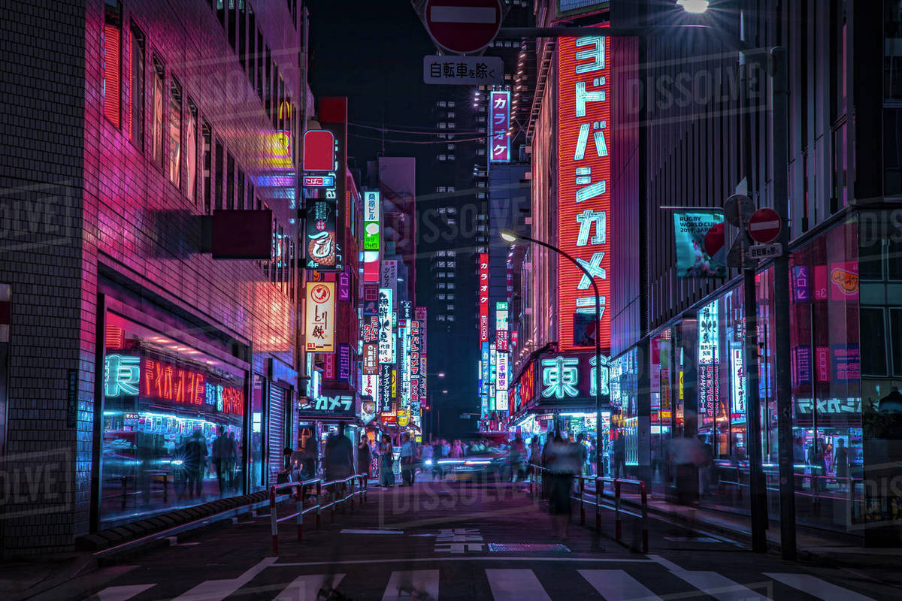
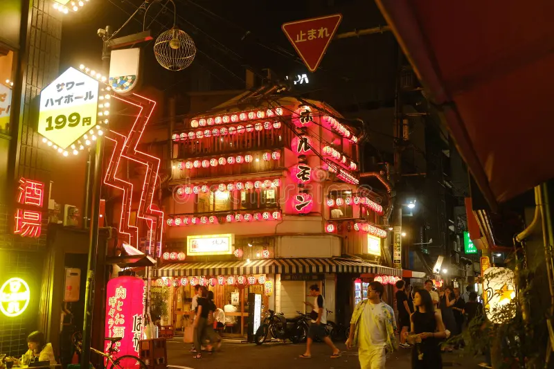

Shinjuku
The Heart of Modern Tokyo
Why Visit Shinjuku?
Shinjuku functions as Tokyo's entertainment and commercial center with extensive infrastructure for dining, shopping, and nightlife. The district has enough scale that multiple interests can be accommodated in one area. The Shinjuku Crossing is a notable urban phenomenon worth observing as an example of organized pedestrian flow. Shopping options range across different price points and product categories. The food and bar scene is substantial with various options for different budgets. You have access to observation points for city views and various entertainment venues. The railway station is one of the busiest in the world, which is functionally interesting if nothing else. If you're interested in experiencing Tokyo's commercial and entertainment infrastructure, urban density, shopping, nightlife, or just seeing how a major Japanese metropolitan district operates, Shinjuku has the density and variety to support that.
Shinjuku Gallery


